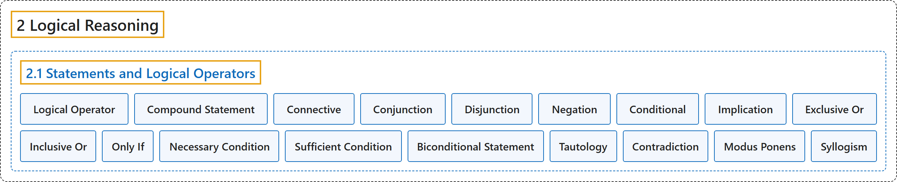

2.1 Statements and Logical Operators
Classification

Glossary
| Term | Definition | 中文翻译 | Source |
|---|---|---|---|
| 2 Logical Reasoning 逻辑推理 |
(No definition) | （无定义） | Sundstrom, 2022, chapter 2 |
| 2.1 Statements and Logical Operators 陈述与逻辑运算符 |
(No definition) | （无定义） | Sundstrom, 2022, section 2.1 |
| Logical Operator 逻辑运算符 |
"A logical operator (or connective) on mathematical statements is a word or combination of words that combines one or more mathematical statements to make a new mathematical statement." | 数学陈述上的逻辑运算符（或联结词）是把一个或多个数学陈述组合成新数学陈述的词或词组。 | Sundstrom, 2022, section 2.1 |
| Compound Statement 复合陈述 |
"A compound statement is a statement that contains one or more operators." | 复合陈述是含有一个或多个运算符的陈述。 | Sundstrom, 2022, section 2.1 |
| Connective 联结词 |
"A logical operator (or connective) on mathematical statements is a word or combination of words that combines one or more mathematical statements to make a new mathematical statement." | 数学陈述上的逻辑运算符（或联结词）是把一个或多个数学陈述组合成新数学陈述的词或词组。 | Sundstrom, 2022, section 2.1 |
| Conjunction 合取 |
"The conjunction of the statements \(P\) and \(Q\) is the statement “\(P\) and \(Q\)” and its denoted by \(P \wedge Q\). The statement \(P \wedge Q\) is true only when both \(P\) and \(Q\) are true." | 陈述 \(P\) 与 \(Q\) 的合取是陈述“\(P\) 且 \(Q\)”，记作 \(P \wedge Q\)。陈述 \(P \wedge Q\) 只有在两者都为真时才为真，即 \(P\) 和 \(Q\) 都为真。 | Sundstrom, 2022, section 2.1 |
| Disjunction 析取 |
"The disjunction of the statements \(P\) and \(Q\) is the statement “\(P\) or \(Q\)” and its denoted by \(P \vee Q\text{.}\) The statement \(P \vee Q\) is true only when at least one of \(P\) or \(Q\) is true." | 陈述 \(P\) 与 \(Q\) 的析取是陈述“\(P\) 或 \(Q\)”，记作 \(P \vee Q\)。陈述 \(P \vee Q\) 只有在至少一个为真时才为真，即 \(P\) 或 \(Q\) 中至少一个为真。 | Sundstrom, 2022, section 2.1 |
| Negation 否定 |
"The negation of the statement \(P\) is the statement “not \(P\)” and is denoted by \(\neg P\). The negation of \(P\) is true only when \(P\) is false, and \(\neg P\) is false only when \(P\) is true." | 陈述 \(P\) 的否定是陈述“非 \(P\)”，记作 \(\neg P\)。\(P\) 的否定只有在 \(P\) 为假时才为真，而 \(\neg P\) 只有在 \(P\) 为真时才为假。 | Sundstrom, 2022, section 2.1 |
| Conditional 条件式 |
"The implication or conditional is the statement “If \(P\) then \(Q\)” and is denoted by \(P \to Q\). The statement \(P \to Q\) is often read as “\(P\) implies \(Q\text{,}\)” and we have seen in Section 1.1 that \(P \to Q\) is false only when \(P\) is true and \(Q\) is false." | 蕴涵或条件式是陈述“如果 \(P\) 那么 \(Q\)”，记作 \(P \to Q\)。陈述 \(P \to Q\) 常读作“\(P\) 蕴涵 \(Q\)”，我们在 1.1 节看到 \(P \to Q\) 只有在 \(P\) 为真且 \(Q\) 为假时才为假。 | Sundstrom, 2022, section 2.1 |
| Implication 蕴涵 |
"The implication or conditional is the statement “If \(P\) then \(Q\)” and is denoted by \(P \to Q\). The statement \(P \to Q\) is often read as “\(P\) implies \(Q\text{,}\)”" | 蕴涵或条件式是陈述“如果 \(P\) 那么 \(Q\)”，记作 \(P \to Q\)。陈述 \(P \to Q\) 常读作“\(P\) 蕴涵 \(Q\)”。 | Sundstrom, 2022, section 2.1 |
| Exclusive Or 不可兼或 |
"A different use of the word “or” is the “exclusive or.” For the exclusive or, the resulting statement is false when both statements are true. That is, “\(P\) exclusive or \(Q\)” is true only when exactly one of \(P\) or \(Q\) is true." | “或”的另一种用法是“不可兼或”。对不可兼或，两个陈述都为真时，所得陈述为假。也就是说，“\(P\) 不可兼或 \(Q\)”只有在恰好一个为真时才为真，即 \(P\) 或 \(Q\) 中恰好一个为真。 | Sundstrom, 2022, section 2.1 |
| Inclusive Or 可兼或 |
"In mathematics, we use the “inclusive or” unless stated otherwise. This means that \(P \vee Q\) is true when both \(P\) and \(Q\) are true and also when only one of them is true." | 在数学中，除非另有说明，我们使用“可兼或”。这意味着 \(P \vee Q\) 在两者都为真时为真（\(P\) 和 \(Q\) 都为真），在只有其中一个为真时也为真。 | Sundstrom, 2022, section 2.1 |
| Only If 仅当 |
"Following are some common ways to express the conditional statement \(P \to Q\) in the English language: If \(P\text{,}\) then \(Q\text{.}\) \(P\) implies \(Q\text{.}\) \(P\) only if \(Q\text{.}\)" | 下面是英语中表达条件陈述 \(P \to Q\) 的一些常见方式：如果 \(P\)，那么 \(Q\)。\(P\) 蕴涵 \(Q\)。\(P\) 仅当 \(Q\)。 | Sundstrom, 2022, section 2.1 |
| Necessary Condition 必要条件 |
"\(Q\) is necessary for \(P\text{.}\) (This means that if \(P\) is true, then \(Q\) is necessarily true.)" | \(Q\) 对 \(P\) 是必要的。（这意味着如果 \(P\) 为真，那么 \(Q\) 必然为真。） | Sundstrom, 2022, section 2.1 |
| Sufficient Condition 充分条件 |
"\(P\) is sufficient for \(Q\text{.}\) (This means that if you want \(Q\) to be true, it is sufficient to show that \(P\) is true.)" | \(P\) 对 \(Q\) 是充分的。（这意味着如果要 \(Q\) 为真，只需证明 \(P\) 为真。） | Sundstrom, 2022, section 2.1 |
| Biconditional Statement 双条件陈述 |
"The symbolic form for the biconditional statement “\(P\) if and only if \(Q\)” is \(P \leftrightarrow Q\text{.}\)" | 双条件陈述“\(P\) 当且仅当 \(Q\)”的符号形式是 \(P \leftrightarrow Q\)。 | Sundstrom, 2022, section 2.1 |
| Tautology 重言式 |
"A tautology is a compound statement \(S\) that is true for all possible combinations of truth values of the component statements that are part of \(S\text{.}\)" | 重言式是一个复合陈述 \(S\)，它对所有可能的真值组合都为真（指构成 \(S\) 的各分陈述的真值）。 | Sundstrom, 2022, section 2.1 |
| Contradiction 矛盾式 |
"A contradiction is a compound statement that is false for all possible combinations of truth values of the component statements that are part of \(S\text{.}\)" | 矛盾式是一个复合陈述，它对所有可能的真值组合都为假（指构成 \(S\) 的各分陈述的真值）。 | Sundstrom, 2022, section 2.1 |
| Modus Ponens 肯定前件式 |
"Show that \(\left[ (P \to Q) \wedge P \right] \to Q\) is a tautology. Note: In symbolic logic, this is an important logical argument form called modus ponens." | 证明 \(\left[ (P \to Q) \wedge P \right] \to Q\) 是重言式。注：在符号逻辑中，这是一种称为肯定前件式的重要逻辑论证形式。 | Sundstrom, 2022, section 2.1 |
| Syllogism 三段论 |
"Show that \(\left[ (P \to Q) \wedge (Q \to R) \right] \to (P \to R)\) is a tautology. Note: In symbolic logic, this is an important logical argument form called syllogism." | 证明 \(\left[ (P \to Q) \wedge (Q \to R) \right] \to (P \to R)\) 是重言式。注：在符号逻辑中，这是一种称为三段论的重要逻辑论证形式。 | Sundstrom, 2022, section 2.1 |
References
Sundstrom, T. (2022). Mathematical reasoning: Writing and proof (Version 2.1; PreTeXt edition by Grand Valley State University). Retrieved October 30, 2026, from https://gvsuoer.github.io/sundstrom-textbook/frontmatter.html